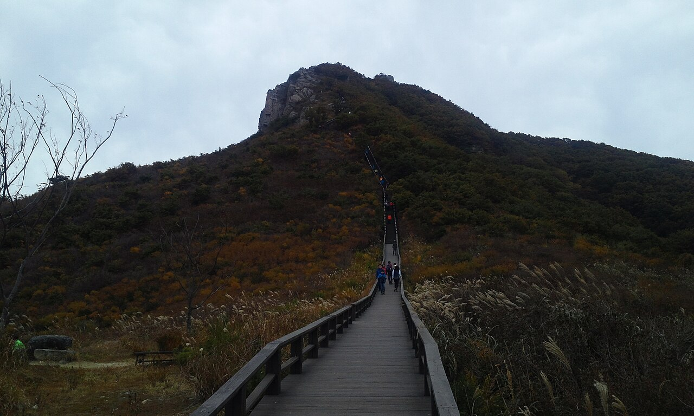
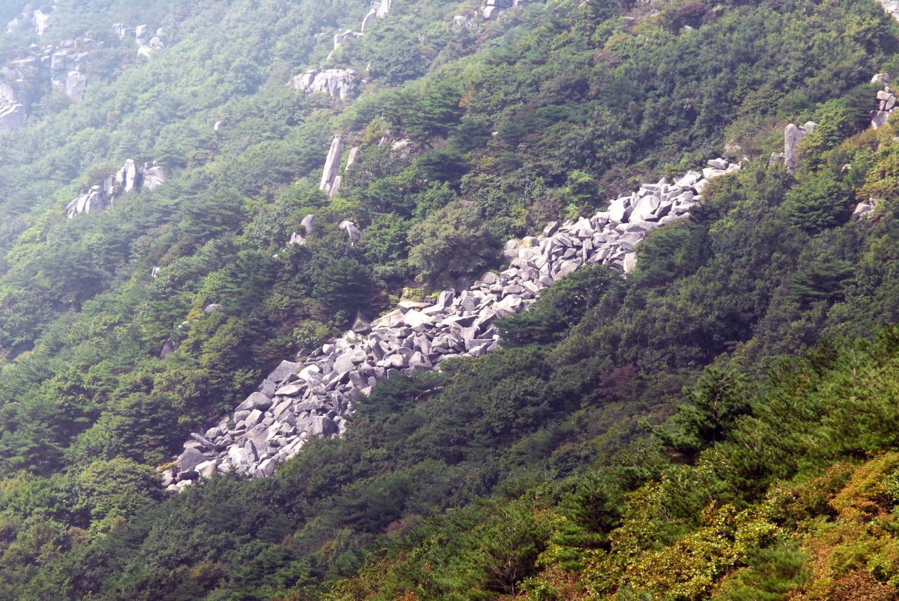
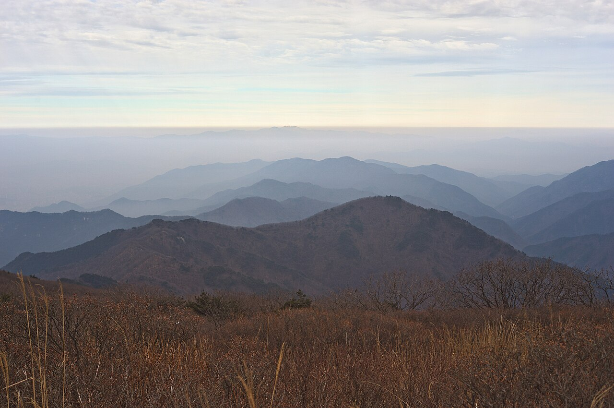

2026.11.20(금) – 11.22(일) · 2박 3일
남원 → 합천 → 대구 달성 → 안동
늦가을의 돌과 나무, 물돌이와 별빛을 건너는 사흘
근대 목조 간이역의 철길과 청사초롱 켜진 광한루원 야경으로 여는 남원의 첫날부터, 해발 850m 황매산 억새 능선과 가야산 팔만대장경, 달성 400년 은행나무와 비슬산유스호스텔(호텔 아젤리아) 숙박을 거쳐 안동 만대루 일곱 칸 차경과 월영교로 맺는 2박 3일 가족 자차 여행 웹진입니다.
사전 동선을 넉넉히 담아두었습니다. 가족 컨디션이나 시간에 맞춰 체크박스로 원하지 않는 곳을 바로 제외하면 아래 세부 일정과 예상 경비가 즉시 맞춰집니다.
모바일 네이버지도 연동: 스마트폰에서 초록색 [네이버지도] 버튼을 누르면 네이버지도 앱이 바로 실행되어 길안내·내비를 즉시 시작할 수 있습니다. (PC에서는 웹 지도로 열립니다)
남원→황매산 약 1시간 20분 · 해인사→비슬산 약 55분 · 비슬산→부용대 약 1시간 30분
선택된 동선: 15 / 15곳
포함
일차 · 권장시간
구분
장소 · 핵심 포인트 (클릭 시 세부 이동)
입장료 · 주차
네이버지도 · 세부보기
Day 1 · 11.20(금) 14:00 – 15:00
핵심
1. 구 서도역 영상촬영장1932년 목조 간이역 & 가을 메타세쿼이아 철길 산책 · 전북 남원시 사매면 서도길 32
광한루 18시 야간 무료 입장 전까지 해 질 녘 고건축 한옥 마당과 요천변 산책로를 천천히 거닙니다.
전통 한옥 명장들이 지은 남원예촌(광한루 북문 맞은편)은 고즈넉한 한옥 지붕선을 따라 걷기 좋고, 바로 남쪽 요천 건너 춘향테마파크는 21:00까지 무료 개방되어 밤하늘을 보기 전 가볍게 들르기 좋습니다. 이 시간에 서남만찬 웨이팅·명문제과(16:30 빵 출고)를 다녀오는 일정으로 갈음할 수도 있습니다.
해가 지는 오후 6시 정각, 은하수를 상징하는 연못 위로 수백 개의 청사초롱과 누각 불빛이 피어오릅니다.
동절기(11월~3월) 광한루원은 오전 8시부터 밤 8시까지 문을 열며, 매일 오후 6시 이후부터는 야간 무료 개장으로 별도 매표 없이 정원 전체를 산책할 수 있습니다. 1626년 중건된 호남제일루 광한루와 오작교, 완월정이 잔잔한 물 위에 데칼코마니처럼 비치는 밤 풍경은 남원 여행에서 놓칠 수 없는 백미입니다.
야간 운영동절기(11~3월) 08:00~20:00 · 18:00~20:00 야간 전원 무료
주간 요금18시 이전: 어른 4,000원(남원사랑상품권 2천원 환급) · 청소년 2,000원 · 어린이 1,500원 · 남원춘향사랑권(1일 4,900원) 적용
11월 하순 한국 밤하늘 동남쪽에 높이 떠오르는 오리온자리와 맑은 성야 이미지 (Wikimedia Commons)
5. 남원항공우주천문대 (남원시천문과학관)
19:30 – 21:00 (21:30 마감)
광한루에서 저녁 식사를 마친 뒤 언덕 위 춘향테마파크로 올라 600mm 반사망원경 너머 11월의 별을 만납니다.
천체투영실과 4D 항공체험, 주·보조 관측실의 대형 망원경을 갖춘 도심 접근형 천문대입니다. 11월 하순 밤에는 플레이아데스 성단과 동쪽 하늘로 오르는 오리온자리를 관측하기 좋습니다. 별도 사전 예약 없이 현장 발권으로 이용할 수 있으며, 당일 광한루원 유료 입장권 소지 시 연계 할인도 적용됩니다.
정상주차장에서 몇 분만 걸으면 펼쳐지는 해발 850m 능선의 황금 억새 물결 (Wikimedia Commons)

산성 성곽과 억새가 맞닿은 능선 포인트. 11월 하순에는 은빛을 지나 짙은 황금빛으로 깊어집니다.
6. 합천 황매산군립공원 정상주차장
09:30 – 11:00
해발 800~900m 팔부 능선까지 차로 곧장 올라, 땀을 쏟지 않고도 하늘 아래 광활한 억새 평전을 거닙니다.
10월 축제가 지나고 차분해진 11월 하순의 황매산은 오히려 가장 고요한 가을 풍경을 보여줍니다. 정상주차장(제1오토캠핑장 일원) 바로 옆으로 유모차와 어르신도 편안히 걸을 수 있는 무장애 목재 데크길이 이어져 체력 부담이 적습니다. 11월은 비수기 요금이 적용되어 소형 4시간 4,000원이며, 40분 이내 회차 시 무료입니다.
해인사에서 한 시간 남짓 달려 낙동강 물길 굽이에 닿으면, 400년 은행나무가 황금빛 기둥처럼 서원 문턱을 지킵니다.
한훤당 김굉필 선생을 모신 유네스코 세계유산이자 흥선대원군의 서원 철폐령을 버텨낸 5대 서원입니다. 수령 400년 은행나무가 정확히 11월 중하순 절정을 맞으며, 보물 중정당과 국내 최초로 보물 지정된 토담의 선이 아름답습니다. 오후 5시 폐문이므로 늦지 않게 도착하세요.
신생대 빙하기 동결·융해 작용이 2km 가까이 쏟아 내려 만든 '돌의 강', 천연기념물 제435호 비슬산 암괴류 (국립문화유산연구원)

비슬산 암괴류 거석 지대 (국립문화유산연구원)

운무가 걸리는 비슬산 능선 (Wikimedia Commons)
10. 비슬산 자연휴양림 & 암괴류 선택 경유
16:50 – 17:40
국내 최대 규모의 화강암 돌강인 비슬산 암괴류와 고즈넉한 자연휴양림 숲길을 가볍게 둘러봅니다.
지름 수 미터짜리 화강암 바위들이 계곡을 따라 강물처럼 흘러내린 천연기념물 제435호 암괴류가 휴양림 도로변 관찰 데크에서 바로 보입니다. 만약 해발 1,000m 대견사까지 반딧불이 전기차(11월 상행 막차 16:20 / 하행 17:30)를 타고 오르려면 일정을 앞당겨야 하며, 저녁 무렵 도착한다면 하단 숲길·암괴류 산책 후 숙소로 바로 들어가는 것이 여유롭습니다.
주소 · 주차대구 달성군 유가읍 일연선사길 61 · 공영주차장 무료 (전기차 충전기 완비)
물줄기가 산과 마을을 S자로 감싸 도는 하회(河回)의 지형을 한눈에 조망하는 부용대 뷰 (Wikimedia Commons)
12. 안동 부용대 (하회마을 물돌이 파노라마)
10:30 – 11:25
마을 안쪽에서 보는 것보다, 강 건너 해발 64m 깎아지른 절벽 위에 올라서야 비로소 하회(河回)의 비밀이 보입니다.
중요한 동선 팁은 하회마을 매표소 주차장과 부용대가 강을 사이에 두고 마주 보고 있어 걸어서 건널 수 없다는 점입니다. '부용대 주차장' 또는 '화천서원'으로 바로 내비를 찍고 들어가면, 무료 주차 후 소나무 숲 오솔길 350m를 10~15분만 걸어 올라 압도적인 S자 물돌이 전경을 만납니다.